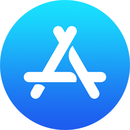

WF Watch App by Randy Casburn
Where Can I Find This App?
WF Watch App by Randy Casburn
Where Can I Find This App?
 Installation
Installation
NOTE: This is a Watch Only app - it is unlike other iPhone/Watch apps you've installed before.
You can install the app from your watch or from your iPhone.
Follow these steps to install the app from your watch
- Find the link in a message or e-mail on your watch
- The provided link will open the product page on the App Store
- The product is hidden/not discoverable on the App Store
- Do not share the provided link with anyone else
- Follow the prompts to aquire and download the app
- Press the [Open] button when presented
- When the app launches, follow the "First Launch" instructions provided
Follow these steps to install the app from your iPhone
- Find the link in a message or e-mail on your iPhone
- The provided link will open the product page on the App Store
- The product is hidden/not discoverable on the App Store
- Do not share the provided link with anyone else
- Follow the prompts to aquire and download the app
- The app will not show up in the list of iPhone apps
- This is what makes it different from other apps
- The app is now installed on your watch
- On your watch, tap the crown (scroll wheel) one time
- Find the app icon that looks like a yellow arrow and tap it
- When the app launches, follow the "First Launch" instructions provided
Follow these steps to remove and reinstall the app
- REMOVE:
- Open the Watch app on your iPhone
- Scroll to "INSTALLED ON APPLE WATCH" section
- Click on "WF Favorites Watch"
- Click on "Delete app on Apple Watch"
- Click "delete" in the popup
- RE-INSTALL:
- On your watch, tap the crown (scroll wheel) one time
- Find the app store icon and tap it 
- Scroll all the way to the bottom and tap "Account"
- Tap "Purchased"
- Tap "My Purchases"
- Find "WF Favorites Watch" in the list
- Tap the download cloud icon
- Press the [Open] button when presented
- When the app launches, follow the "First Launch" instructions provided